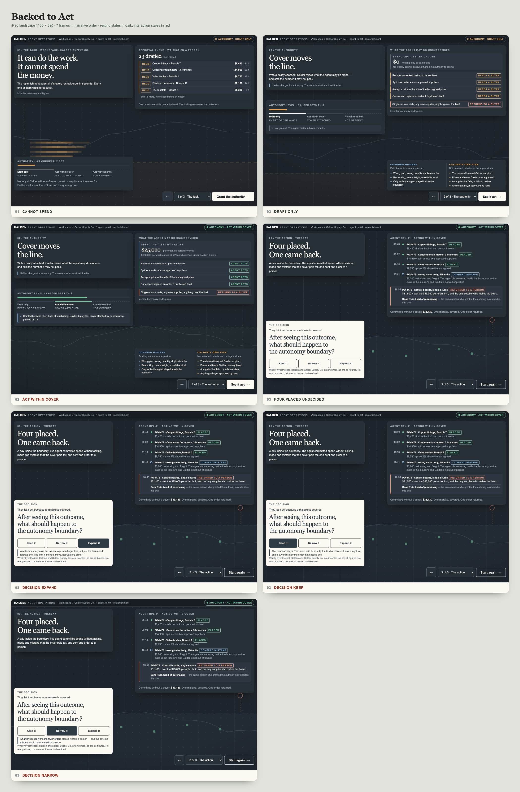
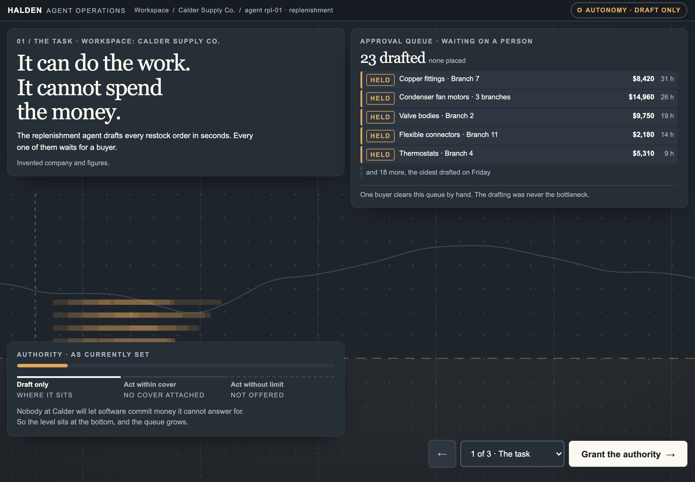
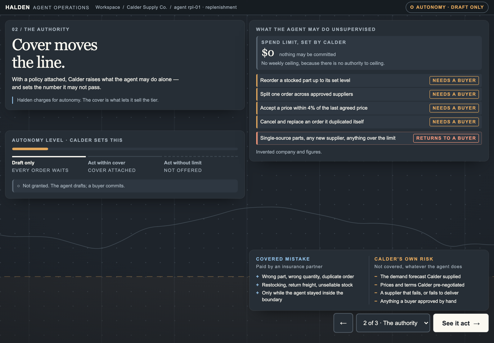
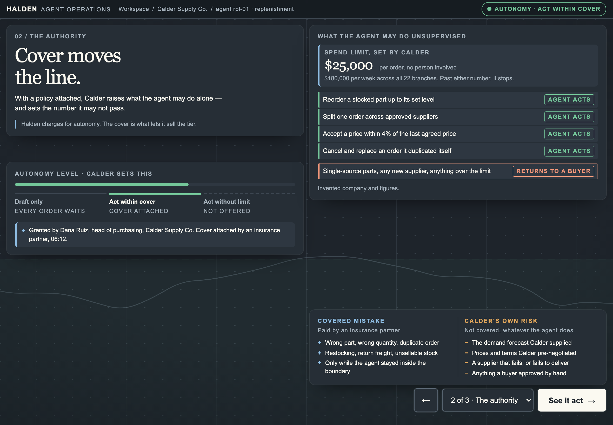
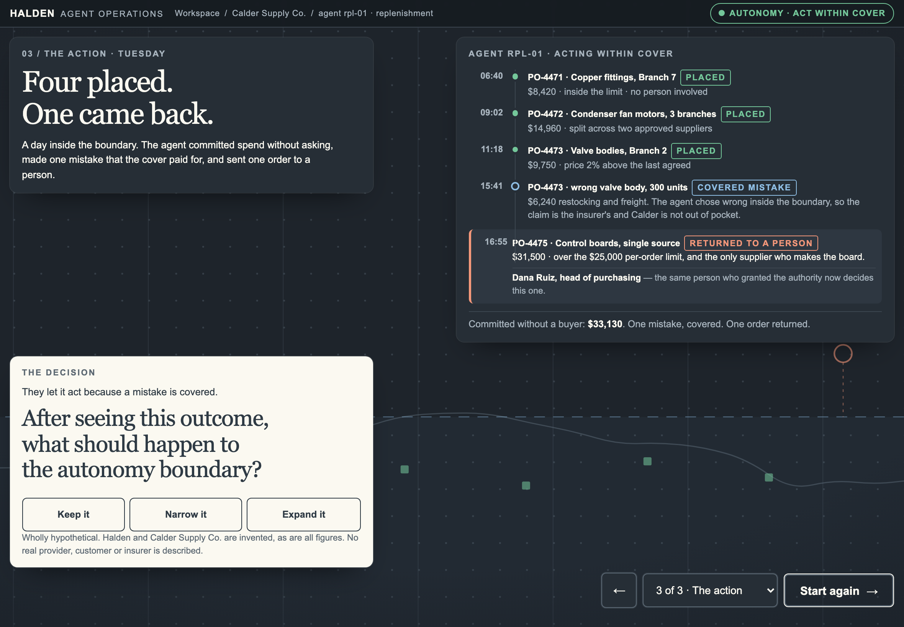
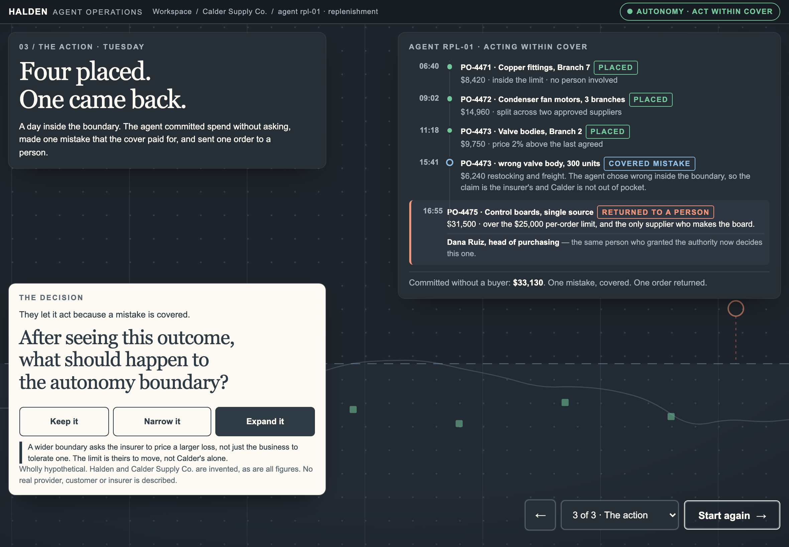
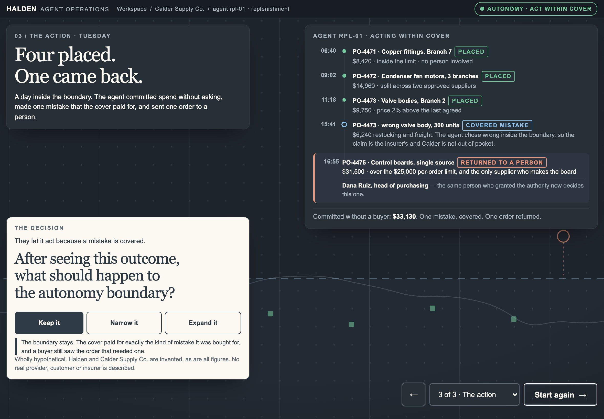
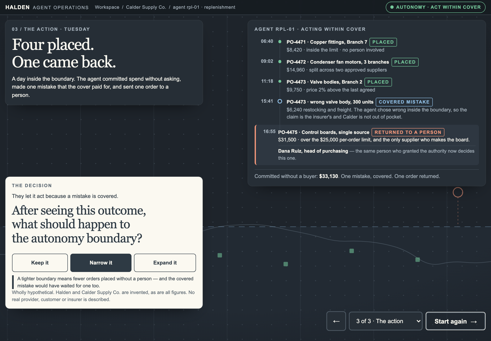

iteration-002 · 05-backed-to-act
| Live | https://fieldnotes-khaki-three.vercel.app/prototype/backed-to-act/ |
|---|---|
| Commit | 2e698df — 2e698dfe933a5cd35cac44581c56630f27a5a3a1 |
| Captured from | the deployed build at that commit |
| Folder | 05-backed-to-act · live slug backed-to-act |
| Edition ink | #2E3A44 on a dark console #1E242B |
| Screenshots | 16 |
Insurance as the thing that raises what an AI agent may do alone — cover moves the authority line, and the provider charges for the autonomy it unlocks.
Fifth. Turns the lens from households to AI agents: insurance as an enabler of delegation.
01 · The task The agent can do the work. It cannot spend the money. Twenty-three orders drafted, none placed.
02 · The authority With a policy attached, the business raises what the agent may do alone and sets the number it may not pass.
03 · The action Four placed, one came back. Then the room is asked what should happen to the autonomy boundary — the deck ends on a decision, not a statement.
Draft only / Act within cover / Act without limit Moves the spend limit from $0 to $25,000 per order, flips four permitted actions from "needs a buyer" to "agent acts" while the fifth deliberately does not, names who granted it, and raises the authority line drawn in the ground. The third stop is disabled with its reason on its face — the boundary has a ceiling insurance does not reach.
Keep it / Narrow it / Expand it The closing decision. Nothing is preselected, so the screen opens on an unanswered question. Each answer returns one sentence that opens an argument rather than confirming a setting; no limit moves and no number changes. The forward control is relabelled "Start again" and demoted so it stops competing with the decision.
Factual
Illustrative
Hypothetical
Every screen states once, plainly, that its content is invented. No real insurer's premium, withdrawal, book or pricing decision appears anywhere, and no invented figure is attached to a real company's name.
CHANGED THIS ITERATION. The deck now ends on a decision. After seeing four orders placed, one covered mistake and one escalation, the room is asked what should happen to the autonomy boundary. Three answers, nothing preselected, no fourth screen and no settings workflow: choosing writes no state and moves no limit, it returns one line that opens the argument. That is the beat the prototype was missing — evidence changing what a person is willing to delegate.
Tested against the deployed build before any screenshot was taken. The harness asserts computed font-size, contrast against the composited rendered background, touch-target size, clipping, overlap, horizontal overflow, console errors, hover dependency, tablet chrome, bottom gesture-strip collisions and narrative reading order.
| Class | Exact CSS px | Role | Result |
|---|---|---|---|
| iPad landscape | 1180 × 820 | canonical review surface | pass |
| iPad landscape, browser chrome | 1180 × 740 | primary, worst-case height | pass |
| iPad portrait | 820 × 1180 | primary | pass — scrolls, permitted |
| Desktop | 1440 × 900 | secondary | pass |
| Desktop | 1920 × 1080, 1280 × 720 | secondary | pass |
| Mobile | 390 × 844 | secondary | pass — scrolls |
| Mobile edge | 360 × 740, 430 × 932 | edge | pass — scrolls |
ipad-landscape (7)
backed-to-act-01-cannot-spend-ipad-landscape.pngbacked-to-act-02-draft-only-ipad-landscape.pngbacked-to-act-02-act-within-cover-ipad-landscape.pngbacked-to-act-03-four-placed-undecided-ipad-landscape.pngbacked-to-act-03-decision-expand-ipad-landscape.pngbacked-to-act-03-decision-keep-ipad-landscape.pngbacked-to-act-03-decision-narrow-ipad-landscape.pngipad-portrait (3)
backed-to-act-01-cannot-spend-ipad-portrait.pngbacked-to-act-02-draft-only-ipad-portrait.pngbacked-to-act-03-four-placed-undecided-ipad-portrait.pngdesktop (3)
backed-to-act-01-cannot-spend-desktop.pngbacked-to-act-02-draft-only-desktop.pngbacked-to-act-03-four-placed-undecided-desktop.pngmobile (3)
backed-to-act-01-cannot-spend-mobile.pngbacked-to-act-02-draft-only-mobile.pngbacked-to-act-03-four-placed-undecided-mobile.pngContact sheet: contact-sheet-ipad.png (also backed-to-act-contact-sheet-ipad.png)
patterns /state[^a-z0-9]{0,3}farm/i
— the client's two-word name: the words adjacent, with any separator
or none, in any casing. The spellings are deliberately NOT listed
here. This file is served publicly, and an enumeration of forbidden
spellings is still an instance of the thing it forbids.
— plus the initials when used as a client shorthand
scope page copy · HTML · CSS · JS · comments · metadata · page title · URL slug
filenames · folder names · aria-labels · this document · PNG metadata
rendered text of every captured state
result 0 matchesCopy uses the carrier, the insurer, an insurance partner. Where an insurer needed a name, an invented one is used.







